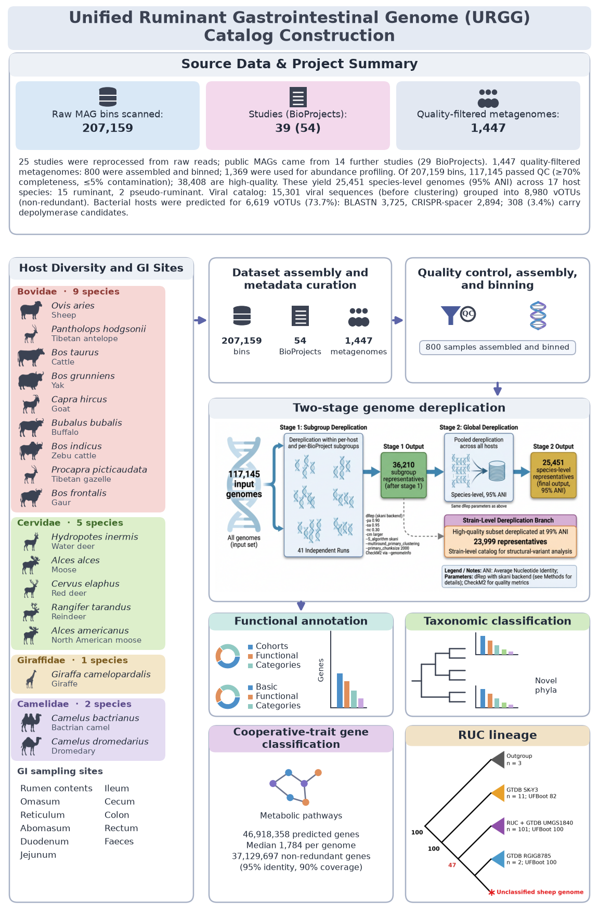

URGG catalog: construction and analysis scripts
Ruminant and pseudo-ruminant genome catalog. Every script used to build and analyse the catalog is listed here, with its inputs and outputs.
Workflow

Catalog at a glance
| Metric | Value |
|---|---|
| Studies (BioProjects) | 39 (54) |
| Host species | 17 (15 ruminant, 2 pseudo-ruminant) |
| GI sampling sites | 13 |
| Quality-filtered metagenomes | 1,447 |
| Assembled and binned | 800 |
| Used for abundance and diversity profiling | 1,369 |
| Bins from assembled samples | 207,159 |
| Pass QC (≥70% completeness, ≤5% contamination) | 117,145 |
| High-quality (>90% completeness, ≤5% contamination) | 38,408 |
| Species-level genomes (95% ANI) | 25,451 |
| Strain-level genomes (99% ANI) | 23,999 |
| Near-complete genomes | 10,546 (41.4% of species-level) |
| Predicted protein-coding genes | 46,918,358 |
| Non-redundant genes (95% identity, 90% coverage) | 37,129,697 |
Scripts
| Script | Produces |
|---|---|
analysis/figA_thiamine_guilds.py | Thiamine producer and salvager guilds (Fig. A) |
analysis/figC_a_phylum_tier_cazy.py | Phylum × tier × CAZy family (Fig. 3c) |
analysis/figC_a_phylum_tier_cazy_pub.py | Publication layout of the CAZy figure, with phylum pies |
analysis/figC_b_subpathway_phylum.py | Sub-pathway phylum composition and tier prevalence (Fig. 3b) |
analysis/figure6b_amr_heatmap.py | AMR gene families across host species (Fig. 6b) |
analysis/fig5_placement_ladder.py | Target placement summary, ladder layout |
analysis/fig5_placement_tree.py | Target placement summary, tree layout |
figures/make_workflow_infographic.py | The workflow figure above |
figures/make_host_icons.py | Transparent host icons from a silhouette sheet |
Run
pip install numpy pandas matplotlib scipy pillow
python scripts/analysis/figure6b_amr_heatmap.py <out_dir> 600Input paths are set near the top of each script. Data files are not in this repository; see the README for data availability.
Pipeline
- Reprocess raw reads from 25 studies through one uniform pipeline.
- Collect public MAGs from 14 studies (29 BioProjects).
- Quality control, assembly and binning of 1,447 quality-filtered metagenomes (800 assembled and binned).
- Two-stage dereplication: species (95% ANI), then strain (99% ANI).
- Functional, CAZy, thiamine, AMR and placement analyses.